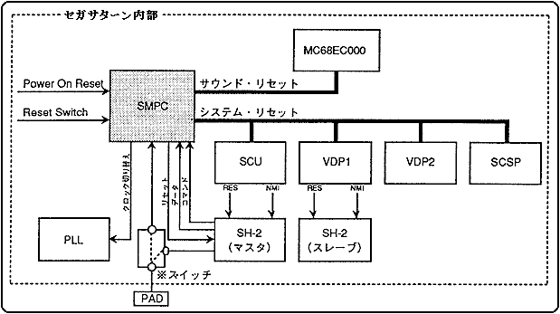

★HARDWARE Manual
★セガサターン概要マニュアル
★HARDWARE Manual
★セガサターン概要マニュアル
SMPCはパワーON時やリセットボタンの押下時に、サターンシステム全体を リセットします。また、SH-2からのコマンドによってサターン内部周辺LSI のON/OFF、カレンダ時計の設定や取得、ペリフェラルからのデータ収集等を 行います。更にクロックチェンジコマンドによって、水平解像度を320ドット または352ドットに切り替えます。
図3.34 SMPCシステム構成

(※ペリフェラルの入出力端子は、SH-2側から直接コントロールすることもできます。)表3.13にSMPCの主な機能を示します。
RTC | ・SH-2からの時刻設定および取得 |
SM | ・サウンドCPUのON/OFF |
PC | ・コントロールパッド、マウス等のペリフェラルデー |
PAD種別 | 仕 様 |
サターン標準PAD | ボタン： |
★HARDWARE Manual
★セガサターン概要マニュアル